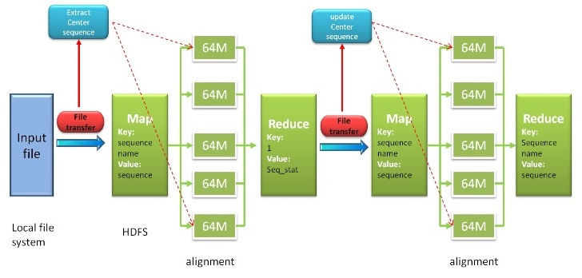

HAlign
HAlign is a package of multi-platform Java software tools, which aimed at large scale multiple
similar DNA/RNA/Protein sequence alignment. HAlign employs center star multiple sequence
alignment strategy. The input file should be a fasta DNA/RNA/Protein file. You can use this tool
in any OS with JVM.
Download HAlign
Latest Release 2.1 available： HAlign2.1.jarA series of detailed usage commands are showed in document part. Besides, a user-friendly server are ready now.
Source code：githubDataset
mitochondrial genomes- Ref: Tanaka M., et al. (2004) Mitochondrial genome variation in eastern Asia and the peopling of Japan. Genome Res,14(10a), 1832-1850
- Download (zipped file): 1x (219KB) 20x (4.27MB) 50x (10.666MB) 100x (21.325MB)
- Ref: DeSantis, T. Z., et al.(2006) NAST: a multiple sequence alignment server for comparative analysis of 16S rRNA genes. Nucleic Acids Res, 34, W394-399
- Download (zipped file): small (21.864MB) big (197.224MB)
- Ref: Thompson, J.D., et al., BAliBASE 3.0: latest developments of the multiple sequence alignment benchmark. Proteins: Structure, Function, and Bioinformatics, 2005. 61(1): p. 127-136
- Download (zipped file): 1x (4.16MB)
Related Tools
SP is a jar file, which can be used to compute the average value of sum-of-pair score for the alignment result.- jar: download
- source code
- Usage: java -jar sp.jar fasta_file [parameter.txt] [-s] where fasta_file is the alignment result, and parameter.txt stores the parameters(it can be omitted), and -s is the resample result(If there are too many sequences, -s can save the running time).
Document
Usages
1. Stand-alone mode
# java -jar HAlign2.1.jar <mode> <input-file> <output-file> <algorithm>
- mode:
-localMSA,-localTree. - input-file: local fasta format file, required.
- output-file: local fasta format file, just a file name, required.
-
algorithm: sequence alignment algorithms, required for
-localMSAmode, but none for-localTreemode.0represents the suffix tree algorithm, the fastest, but only for DNA/RNA;1represents the KBand algorithm based BLOSUM62 scoring matrix, only for Protein;2represents the KBand algorithm based on affine gap penalty, only for DNA/RNA;3represents the trie tree alignment algorithm, but slower and only for DNA/RNA;4represents the basic algorithm based the similarity matrix, the slowest and only for DNA/RNA. But it is the most accurate in the case of lower sequences similarity.
2. Hadoop cluster mode
# hadoop jar HAlign2.1.jar <mode> <input-file> <output-file> <algorithm>
- mode:
-hadoopMSA. - input_file/output_file/algorithm type: same as stand-alone mode.
3. Spark cluster mode
# spark-submit --class main HAlign2.1.jar <mode> <input-file> <output-file> <algorithm>
- mode:
-sparkMSA,-sparkTree. - input-file: local fasta format file, required.
- output-file: local fasta format file, just a file name, required.
- algorithm: sequence alignment algorithms, required for
-sparkMSAmode, but none for-sparkTreemode.0represents the suffix tree algorithm, the fastest, but only for DNA/RNA;1represents the KBand algorithm based BLOSUM62 scoring matrix, only for Protein.
Workflow of Trie Tree

Fig. 1. Workflow of Trie Tree
As shown in the above figure, trie tree approach need to find the center star sequence first, then sum up the results for the final results. The Trie Tree Version runs quickly than the K-Band Version. However, the K-Band Version considers the Affine Gap Penalty while the Trie Tree Version didn't. K-Band approach can be applied for DNA, RNA and Protein multiple sequences alignment, which has a key role in multiple sequences alignment. More detailed information is shown in citation paper.Workflow of Hadoop Map Reduce

Fig. 2. Workflow of Hadoop Map Reduce
Based on map-reduce technique of hadoop, our program can work as hadoop mode for minimizing time cost. Our program reads input file from local file system, then be transformed into format key-value pair lines file and saved in hadoop distributed file system (HDFS). Next, pair sequences alignment procedure will be handed out, which is distributed parallel computing. Our program will search the unique center star sequence after this step, then next step will begin. After summing up procedure, reduce method will generate the final result. More detailed information is shown in citation paper.Server
Web server on Tianjin University (recommended): GO
This website is deployed on the cluster in Tianjin University. All the machines there are ready for day and night. If server is unstable when you visit, or existing other exceptions, just try the following standby server.Web server on QingCloud (standby): GO
This website is deployed on the cluster in QingCloud. Before the experiments, you must startup hadoop cluster if they are dead, and time cost is about one minute. Besides, you can not use spark mode there. Based on this, we recommend the above server strongly.Citation
1. Quan Zou, Qinghua Hu, Maozu Guo, Guohua Wang. HAlign: Fast Multiple Similar DNA/RNA Sequence
Alignment Based on the Centre Star Strategy. Bioinformatics. 2015,31(15): 2475-2481. (link)
2. Quan Zou, Xubin Li, Wenrui Jiang, Ziyu Lin, Guilin Li, Ke Chen. Survey of MapReduce Frame Operation in Bioinformatics. Briefings in Bioinformatics. 2014,15(4): 637-647. (link)
2. Quan Zou, Xubin Li, Wenrui Jiang, Ziyu Lin, Guilin Li, Ke Chen. Survey of MapReduce Frame Operation in Bioinformatics. Briefings in Bioinformatics. 2014,15(4): 637-647. (link)
Contact us
The software tools are developed and maintained by
Dr. Quan Zou.
If you find any bug, welcome to contact me and report.
We thank to Mr. Yaozong Mao, who helped to develop the Hadoop version of our software tool. We thank to Mr. Shixiang Wan, who helped to developed the web server in Qingyun Hadoop System. The work was supported by the Natural Science Foundation of China (No.61370010).
We thank to Mr. Yaozong Mao, who helped to develop the Hadoop version of our software tool. We thank to Mr. Shixiang Wan, who helped to developed the web server in Qingyun Hadoop System. The work was supported by the Natural Science Foundation of China (No.61370010).
Related Work
- MAFFT
- KAlign
- PASTA
- HAlign (Chinese version)
- HPTree
Copyright@2016 by Bioinformatics Laboratory, Tianjin University.